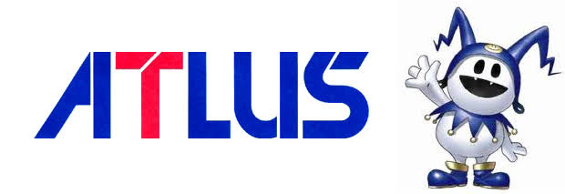

A franquia Persona pertence à desenvolvedora japonesa Atlus, que é uma subsidiária da Sega
Atlus

Atlus é uma desenvolvedora e publicadora japonesa de Video games. É conhecida por desenvolver o RPG Shin Megami Tensei que, contando os jogos não canônicos, possui dúzias de jogos. O primeiro Megami Tensei foi um jogo para NES publicado pela Namco, baseada numa trilogia de romances, mas após o segundo volume, Atlus começou a publicar a série de forma independente. Atlus também lançou o Shin Megami Tensei para o Super Nintendo. O mascote de sua corporação é Jack Frost deste jogo.
Sega
Sega Corporation é uma desenvolvedora e publicadora japonesa de jogos eletrônicos e consoles sediada em Tóquio, possuindo ramos internacionais sediados em Irvine nos Estados Unidos e em Londres no Reino Unido. A empresa foi fundada em 1960 pelo norte-americano Martin Bromley, originalmente como duas companhias separadas chamadas Nihon Goraku Bussan e Nihon Kikai Seizō, que tinham a intenção de assumir os negócios da antiga Service Games of Japan, uma empresa especializada em máquinas caça-níqueis para bases militares. As duas companhias acabaram se fundindo não muito depois e compraram a Rosen Enterprises em 1965, passando então a operar com o nome de Sega Enterprises e em novembro de 2000, a Sega mudou seu nome para Sega Corporation. A Sega é proprietária e desenvolve diversas franquias de sucesso em vendas, incluindo as séries Sonic the Hedgehog, Virtua Fighter, Streets of Rage e Golden Axe.
Atlus